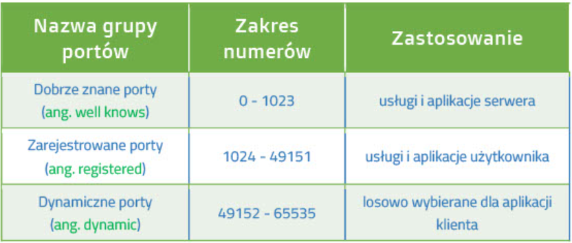
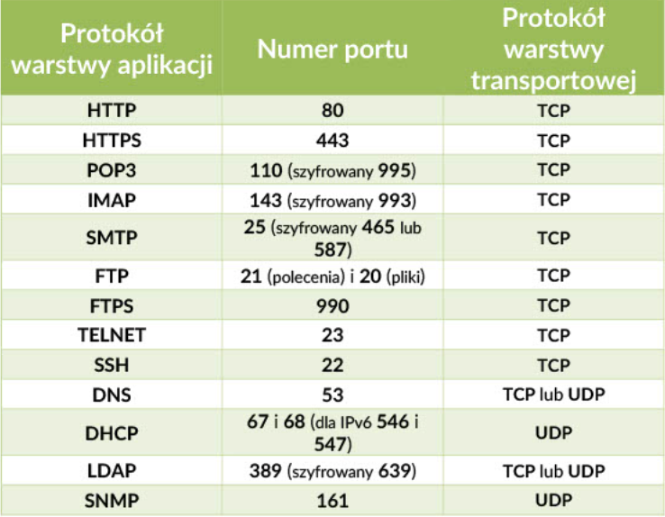
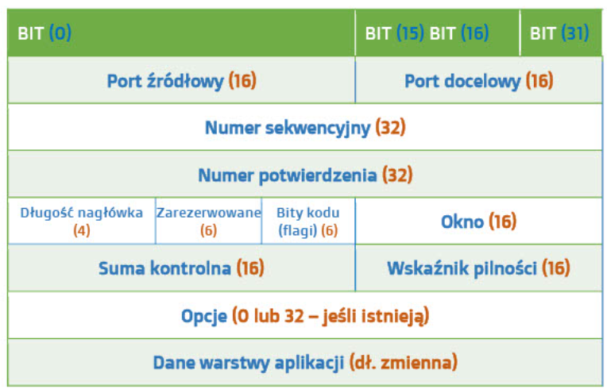

Protokoły warstwy transportu:
- TCP
- UDP
Najważniejsze zadania dotyczące warstwy transportu:
- nawiązanie i obsuła połączeń pomiędzy hostami
- śledzenie połączeń między hostami
- podział danych
- identyfikowanie aplikacji
- kontrola przepływu danych
- retransmisja w przypadku utraty danych
Organizacja zajmująca się przydzielaniem numerów portów to IANA (Internet Numbers Authority),
która podzieliła porty na 3 poszczególne grupy:


!WAŻNE
Działanie kilku aplikacji na tym samym porcie nie jest możliwe.
Socket - To kombinacja adresu IP oraz numeru portu (120.223.21.213:80) odpowiadająca
za proces działający na urządzeniu
Protokół TCP - to połączeniowy protokół, którego użycie gwarantuje niezawodne dostarczanie danych oraz
kontrolę przepływu. W procesie enkapsulacji do nagłówka TCP dodawane jest 20 bajtów danych sterujących.
Wzór segmentu TCP:

Port źródłowy:
- Port aplikacji, z której wysłano dane
Port docelowy:
- Port aplikacji, do której wysłano dane
Numer sekwencyjny:
- Numer ostatniego najtu w segmencie
Numer